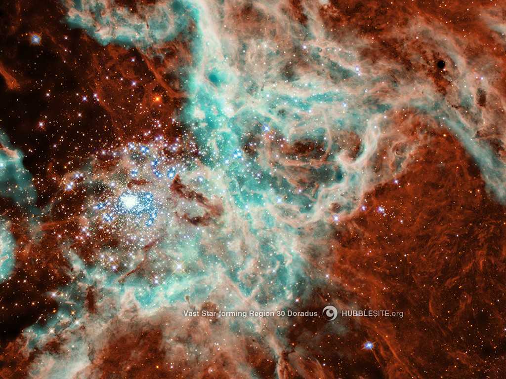
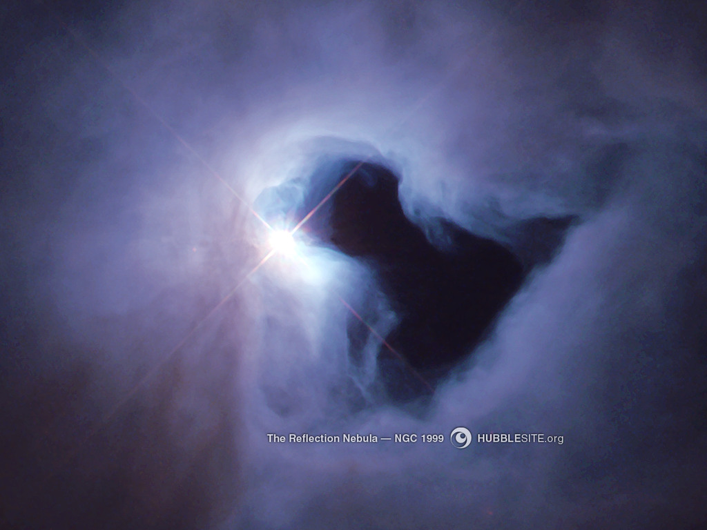

Connected Carousels
This example shows how to connect two carousels together so that one carousels acts as a navigation for the other.
- 
About This Image
Ultraviolet radiation and high-speed material, unleashed by the hot, massive, blue star cluster left of center, plow into clouds of gas and dust. The impact causes the gas and dust to glow, and triggers star formation.
- 
About This Image
Reflection nebulae do not emit light on their own. They shine because of a light source embedded within, like a street lamp illuminates fog. The bright, young star left of center gives NGC 1999 its brightightness. The gas and dust of the nebula is left over from the star's formation.

About This Image
The galaxy I Zwicky 18, originally thought to be a young galaxy, actually seems to have formed around the same time as most other galaxies. The bluish-white knots in the heart of the galaxy are two major star-forming regions.
.jpg)
About This Image
A dying star expels its outer layers, creating a planetary nebula . so called because it resembles a planet when seen with a small telescope. NGC 6369's blue-green ring marks the location where energetic ultraviolet light has stripped electrons from oxygen atoms in the gas.

About This Image
A portion of the Veil Nebula, left behind with the violent explosion of a massive star, shows delicate wisps of gas and dust.
Photos by www.hubblesite.org
‹ ›